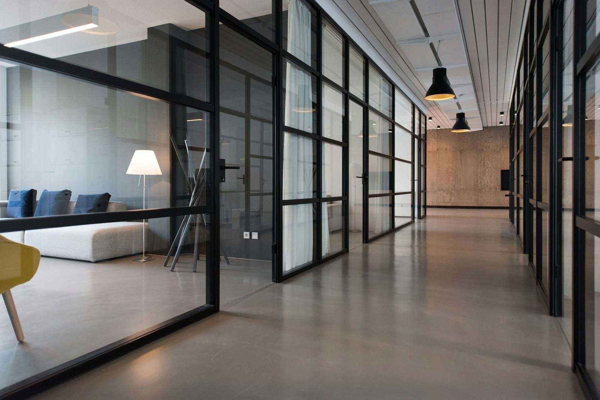

Create
Choose a starting point made for the moment.
A programme, beautifully alive
Make an occasion feel considered from the first scan. Create a beautiful, always-current programme your guests can open on any phone.
No app for guests. Edit right up to the moment it matters.
Saturday, 16:00
16:30 Garden ceremony 17:15 Champagne & photographs 19:00 Dinner under the lightsOne link, every kind of gathering
Garden ceremony · 16:30
146 guests have opened the programmeFrom first thought to first scan
Every detail has a place. Build it once, then let the programme take care of the hand-offs.
Choose a starting point made for the moment.
Add timings, stories, menus, maps and more.
Place one QR code wherever guests gather.
Change a detail and everyone stays in step.
Made for meaningful gatherings
Smart workflow ideas
Explore the kinds of simple workflows that make a live programme feel even more considered.
A future-friendly flow for gently following up with guests who have not replied.
Considered details, all togetherEach programme gets a unique QR code and link for invitations, table cards or a welcome sign.
Considered details, all togetherRunning late? Update one detail and every open guest view stays current.
Considered details, all togetherA future-ready way to collect dietary needs and meaningful notes in one mobile-friendly place.
Considered details, all togetherSee programme visits at a glance so you know guests have what they need.
Considered details, all togetherDesigned for the hand
Guests scan. The programme opens. A lovely, legible experience awaits — no downloads, no accounts, no finding the right paper.
Saturday · 16 November
A few good questions
A programme should make the moment feel simpler. Here are a few details to help you begin.
No. Guests open the programme in their phone browser from a link or QR code.
Yes. Edit your programme and publish the changes; the same link and QR code continue to point to it.
Yes. Start with your existing image or choose a template, then add the details for your event.
Add event times, activities, speakers, roles and details so guests know what is happening and who is involved.
For the moments that bring us together
Bring your people, your details and your day together in one thoughtful programme.
Start a programme ↗